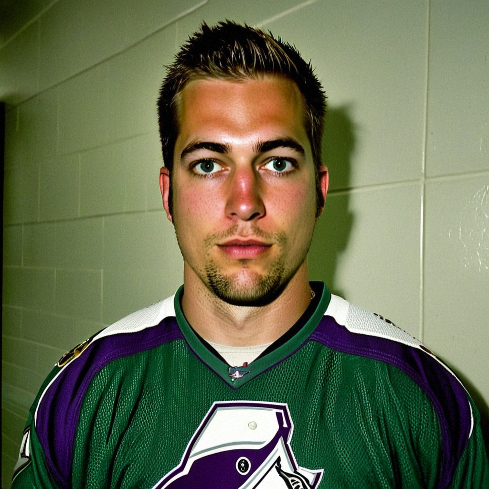

Giguere, four in the net and two on the board: 'the guys in front, they make it easy on you'
The Ducks goalie gave up four on 20 shots against San Jose, then watched Fedorov's two-goal night lift the club to a two-game win streak.
 Marcus BellRinkside reporter · The Tunnel
Marcus BellRinkside reporter · The Tunnel
3:19 · synthetic voices, produced from the record · download
 Jean-Sebastien Giguere97 was not sharp against
Jean-Sebastien Giguere97 was not sharp against  San Jose Sharks on Saturday night, stopping 16 of 20 in
San Jose Sharks on Saturday night, stopping 16 of 20 in  Mighty Ducks of Anaheim's 5-4 win, but two goals from
Mighty Ducks of Anaheim's 5-4 win, but two goals from  Sergei Fedorov90 carried the Ducks to their second straight. Giguere sat 29 games in on the season with 13 wins, no shutouts, and a Development Index that has him three points above his base. The Ducks are 13-12-6 and sit 11 points behind
Sergei Fedorov90 carried the Ducks to their second straight. Giguere sat 29 games in on the season with 13 wins, no shutouts, and a Development Index that has him three points above his base. The Ducks are 13-12-6 and sit 11 points behind  Dallas Stars in the Pacific.
Dallas Stars in the Pacific.
Transcript
Marcus Bell here with Jean-Sebastien Giguere, who just watched his club win 5-4. You give up four on twenty shots. That's not a night you want on tape. Walk me through what it was like watching from the net.
Yeah, four on twenty, that's not good. I'm not going to stand here and say it was, you know, the best. But, uh, we win. The first goal, I wasn't set. I know that. The second one is a screen and a body, the third is a rebound I should have covered. The fourth one, I don't know, maybe I'm a half step late again. For sure it's not pretty. But we get the two points and, and we take it.
Your defensemen had four points between them tonight. Salei scores, Reirden gets one, Berg gets one, Carney gets one. That's a lot of offense from the back end. Does that change how you sleep behind them?
You know, the guys, they push. Ruslan, he's, he's a big guy and he goes there and he shoots, and he scores, so fine. It's great. But, uh, when the D are up there, who's behind me? That's the question. So I tell them, okay, you score, that's fantastic, but you get back. That's the balance. The coach, he says we play with speed, we play to win. So you can't tell Ruslan not to shoot when he's got that position. You just, you hope he gets home on the backcheck.
Fedorov has two goals tonight, three points. That's his third game this season and he's got five points in the last two. What does that do for a goalie who's struggling with his own game?
It saves you, for sure. That's the honest answer. Sergei, he sees things, he's been doing this a long time, and the speed he has, even now, it's something. The first goal he scores tonight, he's already there before the D know he's there. When your best player puts three up, that's, that's the cushion you need on a night like mine. I'm happy for him. You have to be. You can't sit in the crease and feel bad about yourself when your captain's, well, not captain, but, you know, your best guy is playing like that.
You mentioned the first one, the one where you weren't set. It's been a theme this season, hasn't it? 13 and 15, no shutouts. Is that a timing thing with the group, or something in your own preparation?
Yeah. I know the numbers. You don't have to tell me, I see them every morning. And, well, it's, it's everything. Sometimes I'm, I'm slow across, sometimes I'm early. And when you're early, the puck is gone. That's the whole thing. The guys in front, they work hard, but if I'm not tracking the puck through traffic, that's on me. I don't want to put it on them. They're not giving me easy nights sometimes, that's true, but four goals on twenty, I can't ask for more.
You had a short spell out early in this stretch. You're back now, back in the wins column. Is there something different about how you're approaching the net since coming back?
No, I don't think so. I take a day, I come back, I play. I don't change my routine because I miss a day. That's how I've done it since I was, what, nineteen? You prep the same, you trust the work. Tonight I'm not happy with how I played but I'll be in tomorrow and I'll be sharp. Or I'll try to be. You just keep going back in there, for sure.
The Ducks are 13 and 12 and 6, you've got a two-game win streak going. San Jose is on a four-game skid. What does a win like this, where you're not sharp but the team is, say about where this room is heading?
It says we're a team that can win ugly. And that's worth something. You look at the standings, we're not where we want to be, 13-12-6 is not enough, I'll tell you that. But in December, when you're, you know, tired and the legs are heavy and your goalie is not his best, if you still get the two, that's the kind of group that stays in it. We want to play better than this. We can. Tonight was, I don't know, maybe the first period was sloppy, we all were. But we answer when they come back. That's the thing. When they get to four, we don't fold. Erik puts one in, David puts one in, and we get the win. That's the room right now.
Jean-Sebastien Giguere after the game. Thank you.
Merci, Marcus. Good night.